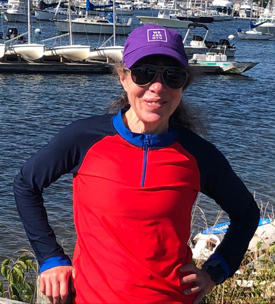

Tamar Schlick is an American applied mathematician who works as a professor of chemistry, mathematics, and computer science at New York University. Her research involves developing and applying tools for modeling and simulating biomolecules. Schlick did her undergraduate studies at Wayne State University and continued her graduate studies at the Courant Institute of Mathematical Sciences at New York University, completing a Ph.D. in applied mathematics in 1987. After postdoctoral studies at NYU and the Weizmann Institute of Science, she returned as a faculty member to NYU in 1989. She is a fellow of the American Association for the Advancement of Science (2004), American Physical Society (2005), Biophysical Society (2012), and Society for Industrial and Applied Mathematics (2012).